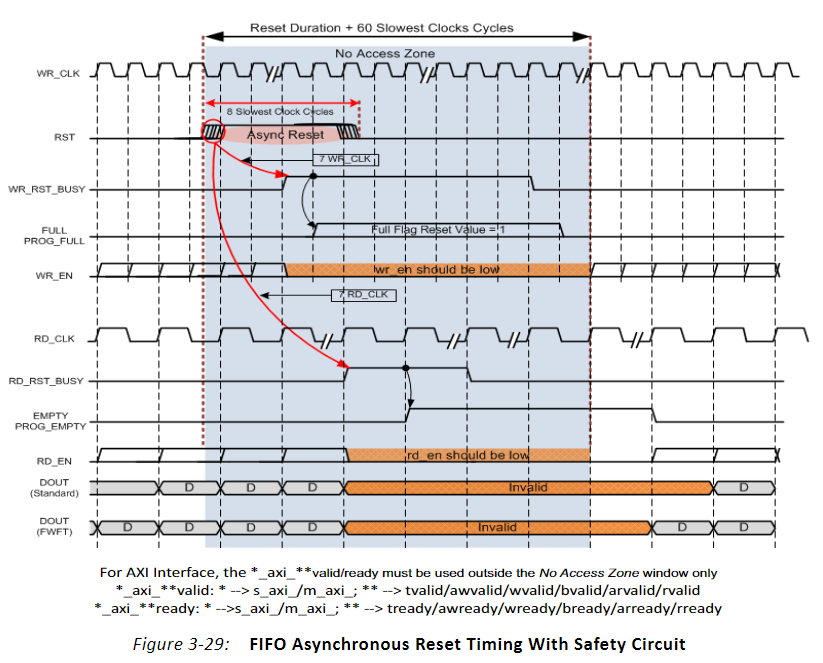
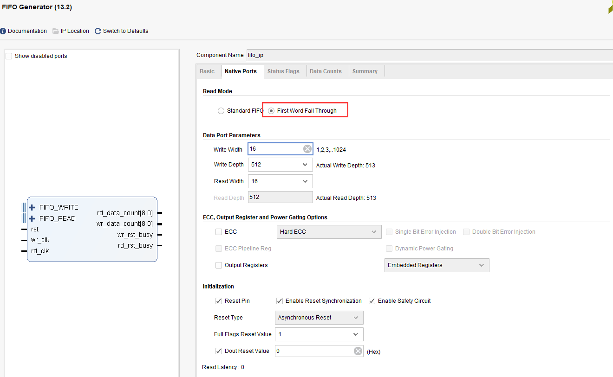

FPGA片内FIFO读写测试实验#
实验Vivado工程为“fifo_test”。
FIFO是FPGA应用当中非常重要的模块，广泛用于数据的缓存，跨时钟域数据处理等。学好FIFO是FPGA的关键，灵活运用好FIFO是一个FPGA工程师必备的技能。本章主要介绍利用XILINX提供的FIFO IP进行读写测试。
实验原理#
FIFO: First in, First out代表先进的数据先出，后进的数据后出。Xilinx在VIVADO里为我们已经提供了FIFO的IP核, 我们只需通过IP核例化一个FIFO，根据FIFO的读写时序来写入和读取FIFO中存储的数据。
其实FIFO是也是在RAM的基础上增加了许多功能，FIFO的典型结构如下，主要分为读和写两部分，另外就是状态信号，空和满信号，同时还有数据的数量状态信号，与RAM最大的不同是FIFO没有地址线，不能进行随机地址读取数据，什么是随机读取数据呢，也就是可以任意读取某个地址的数据。而FIFO则不同，不能进行随机读取，这样的好处是不用频繁地控制地址线。

虽然用户看不到地址线，但是在FIFO内部还是有地址的操作的，用来控制RAM的读写接口。其地址在读写操作时如下图所示，其中深度值也就是一个FIFO里最大可以存放多少个数据。初始状态下，读写地址都为0，在向FIFO中写入一个数据后，写地址加1，从FIFO中读出一个数据后，读地址加1。此时FIFO的状态即为空，因为写了一个数据，又读出了一个数据。

可以把FIFO想象成一个水池，写通道即为加水，读通道即为放水，假如不间断的加水和放水，如果加水速度比放水速度快，那么FIFO就会有满的时候，如果满了还继续加水就会溢出overflow，如果放水速度比加水速度快，那么FIFO就会有空的时候，所以把握好加水与放水的时机和速度，保证水池一直有水是一项很艰巨的任务。也就是判断空与满的状态，择机写数据或读数据。
根据读写时钟，可以分为同步FIFO（读写时钟相同）和异步FIFO（读写时钟不同）。同步FIFO控制比较简单，不再介绍，本节实验主要介绍异步FIFO的控制，其中读时钟为75MHz，写时钟为100MHz。实验中会通过VIVADO集成的在想逻辑分析仪ila，我们可以观察FIFO的读写时序和从FIFO中读取的数据。
创建Vivado工程#
添加FIFO IP核#
在添加FIFO IP之前先新建一个fifo_test的工程, 然后在工程中添加FIFO IP，方法如下：
点击下图中IP Catalog，在右侧弹出的界面中搜索fifo，找到FIFO Generator,双击打开。
弹出的配置页面中，这里可以选择读写时钟分开还是用同一个，一般来讲我们使用FIFO为了缓存数据，通常两边的时钟速度是不一样的。所以独立时钟是最常用的，我们这里选择“Independent Clocks Block RAM”，然后点击“Next”到下一个配置页面。

切换到Native Ports栏目下，选择数据位宽16；FIFO深选择512，实际使用大家根据需要自行设置就可以。Read Mode有两种方式，一个Standard FIFO，也就是平时常见的FIFO，数据滞后于读信号一个周期，还有一种方式为First Word Fall Through，数据预取模式，简称FWFT模式。也就是FIFO会预先取出一个数据，当读信号有效时，相应的数据也有效。我们首先做标准FIFO的实验。
切换到Data Counts栏目下，使能Write Data Count（已经FIFO写入多少数据）和Read Data Count（FIFO中有多少数据可以读），这样我们可以通过这两个值来看FIFO内部的数据多少。点击OK,Generate生成FIFO IP。
FIFO的端口定义与时序#
信号名称 |
方向 |
说明 |
|---|---|---|
rst |
in |
复位信号，高有效 |
wr_clk |
in |
写时钟输入 |
rd_clk |
in |
读时钟输入 |
din |
in |
写数据 |
wr_en |
in |
写使能，高有效 |
rd_en |
in |
读使能，高有效 |
dout |
out |
读数据 |
full |
out |
满信号 |
empty |
out |
空信号 |
rd_data_count |
out |
可读数据数量 |
wr_data_count |
out |
已写入的数据数量 |
FIFO的数据写入和读出都是按时钟的上升沿操作的，当wr_en信号为高时写入FIFO数据，当almost_full信号有效时，表示FIFO只能再写入一个数据，一旦写入一个数据了，full信号就会拉高，如果在full的情况下wr_en仍然有效，也就是继续向FIFO写数据，则FIFO的overflow就会有效，表示溢出。

标准FIFO写时序
当rd_en信号为高时读FIFO数据，数据在下个周期有效。valid为数据有效信号，almost_empty表示还有一个数据读，当再读一个数据，empty信号有效，如果继续读，则underflow有效，表示下溢，此时读出的数据无效。

标准FIFO读时序
而从FWFT模式读数据时序图可以看出，rd_en信号有效时，有效数据D0已经在数据线上准备好有效了，不会再延后一个周期。这就是与标准FIFO的不同之处。

FWFT FIFO读时序
关于FIFO的详细内容可参考pg057文档，可在xilinx官网下载。
FIFO测试程序编写#
我们按照异步FIFO进行设计，用PLL产生出两路时钟，分别是100MHz和75MHz，用于写时钟和读时钟，也就是写时钟频率高于读时钟频率。
`timescale 1ns / 1ps
module fifo_test
(
input clk, //50MHz时钟
input rst_n //复位信号，低电平有效
);
reg [15:0] w_data ; //FIFO写数据
wire wr_en ; //FIFO写使能
wire rd_en ; //FIFO读使能
wire [15:0] r_data ; //FIFO读数据
wire full ; //FIFO满信号
wire empty ; //FIFO空信号
wire [8:0] rd_data_count ; //可读数据数量
wire [8:0] wr_data_count ; //已写入数据数量
wire clk_100M ; //PLL产生100MHz时钟
wire clk_75M ; //PLL产生100MHz时钟
wire locked ; //PLL lock信号，可作为系统复位信号，高电平表示lock住
wire fifo_rst_n ; //fifo复位信号, 低电平有效
wire wr_clk ; //写FIFO时钟
wire rd_clk ; //读FIFO时钟
reg [7:0] wcnt ; //写FIFO复位后等待计数器
reg [7:0] rcnt ; //读FIFO复位后等待计数器
//例化PLL，产生100MHz和75MHz时钟
clk_wiz_0 fifo_pll
(
// Clock out ports
.clk_out1(clk_100M), // output clk_out1
.clk_out2(clk_75M), // output clk_out2
// Status and control signals
.reset(~rst_n), // input reset
.locked(locked), // output locked
// Clock in ports
.clk_in1(clk) // input clk_in1
);
assign fifo_rst_n = locked ; //将PLL的LOCK信号赋值给fifo的复位信号
assign wr_clk = clk_100M ; //将100MHz时钟赋值给写时钟
assign rd_clk = clk_75M ; //将75MHz时钟赋值给读时钟
/* 写FIFO状态机 */
localparam W_IDLE = 1 ;
localparam W_FIFO = 2 ;
reg[2:0] write_state;
reg[2:0] next_write_state;
always@(posedge wr_clk or negedge fifo_rst_n)
begin
if(!fifo_rst_n)
write_state <= W_IDLE;
else
write_state <= next_write_state;
end
always@(*)
begin
case(write_state)
W_IDLE:
begin
if(wcnt == 8'd79) //复位后等待一定时间，safety circuit模式下的最慢时钟60个周期
next_write_state <= W_FIFO;
else
next_write_state <= W_IDLE;
end
W_FIFO:
next_write_state <= W_FIFO; //一直在写FIFO状态
default:
next_write_state <= W_IDLE;
endcase
end
//在IDLE状态下，也就是复位之后，计数器计数
always@(posedge wr_clk or negedge fifo_rst_n)
begin
if(!fifo_rst_n)
wcnt <= 8'd0;
else if (write_state == W_IDLE)
wcnt <= wcnt + 1'b1 ;
else
wcnt <= 8'd0;
end
//在写FIFO状态下，如果不满就向FIFO中写数据
assign wr_en = (write_state == W_FIFO) ? ~full : 1'b0;
//在写使能有效情况下，写数据值加1
always@(posedge wr_clk or negedge fifo_rst_n)
begin
if(!fifo_rst_n)
w_data <= 16'd1;
else if (wr_en)
w_data <= w_data + 1'b1;
end
/* 读FIFO状态机 */
localparam R_IDLE = 1 ;
localparam R_FIFO = 2 ;
reg[2:0] read_state;
reg[2:0] next_read_state;
///产生FIFO读的数据
always@(posedge rd_clk or negedge fifo_rst_n)
begin
if(!fifo_rst_n)
read_state <= R_IDLE;
else
read_state <= next_read_state;
end
always@(*)
begin
case(read_state)
R_IDLE:
begin
if (rcnt == 8'd59) //复位后等待一定时间，safety circuit模式下的最慢时钟60个周期
next_read_state <= R_FIFO;
else
next_read_state <= R_IDLE;
end
R_FIFO:
next_read_state <= R_FIFO ; //一直在读FIFO状态
default:
next_read_state <= R_IDLE;
endcase
end
//在IDLE状态下，也就是复位之后，计数器计数
always@(posedge rd_clk or negedge fifo_rst_n)
begin
if(!fifo_rst_n)
rcnt <= 8'd0;
else if (write_state == W_IDLE)
rcnt <= rcnt + 1'b1 ;
else
rcnt <= 8'd0;
end
//在读FIFO状态下，如果不空就从FIFO中读数据
assign rd_en = (read_state == R_FIFO) ? ~empty : 1'b0;
//-----------------------------------------------------------
//实例化FIFO
fifo_ip fifo_ip_inst
(
.rst (~fifo_rst_n ), // input rst
.wr_clk (wr_clk ), // input wr_clk
.rd_clk (rd_clk ), // input rd_clk
.din (w_data ), // input [15 : 0] din
.wr_en (wr_en ), // input wr_en
.rd_en (rd_en ), // input rd_en
.dout (r_data ), // output [15 : 0] dout
.full (full ), // output full
.empty (empty ), // output empty
.rd_data_count (rd_data_count ), // output [8 : 0] rd_data_count
.wr_data_count (wr_data_count ) // output [8 : 0] wr_data_count
);
//写通道逻辑分析仪
ila_m0 ila_wfifo (
.clk(wr_clk),
.probe0(w_data),
.probe1(wr_en),
.probe2(full),
.probe3(wr_data_count)
);
//读通道逻辑分析仪
ila_m0 ila_rfifo (
.clk(rd_clk),
.probe0(r_data),
.probe1(rd_en),
.probe2(empty),
.probe3(rd_data_count)
);
endmodule
在程序中采用PLL的lock信号作为fifo的复位，同时将100MHz时钟赋值给写时钟，75MHz时钟赋值给读时钟。

有一点需要注意的是，FIFO设置默认为采用safety circuit，此功能是保证到达内部RAM的输入信号是同步的，在这种情况下，如果异步复位后，则需要等待60个最慢时钟周期，在本实验中也就是75MHz的60个周期，那么100MHz时钟大概需要(100/75)x60=80个周期。
因此在写状态机中，等待80个周期进入写FIFO状态

在读状态机中，等待60个周期进入读状态

如果FIFO不满，就一直向FIFO写数据

如果FIFO不空，就一直从FIFO读数据

例化两个逻辑分析仪，分别连接写通道和读通道的信号

仿真#
以下为仿真结果，可以看到写使能wr_en有效后开始写数据，初始值为0001，从开始写到empty不空，是需要一定周期的，因为内部还要做同步处理。在不空后，开始读数据，读出的数据相对于rd_en滞后一个周期。
在后面可以看到如果FIFO满了，根据程序的设计，满了就不向FIFO写数据了，wr_en也就拉低了。为什么会满呢，就是因为写时钟比读时钟快。如果将写时钟与读时钟调换，也就是读时钟快，就会出现读空的情况，大家可以试一下。

如果将FIFO的Read Mode改成First Word Fall Through
仿真结果如下，可以看到rd_en有效的时候数据也有效，没有相差一个周期

板上验证#
生成好bit文件，下载bit文件，会出现两个ila，先来看写通道的，可以看到full信号为高电平时，wr_en为低电平，不再向里面写数据。

而读通道也与仿真一致

如果以rd_en上升沿作为触发条件，点击运行，然后按下复位，也就是我们绑定的PL KEY1，会出现下面的结果，与仿真一致，标准FIFO模式下，数据滞后rd_en一个周期。